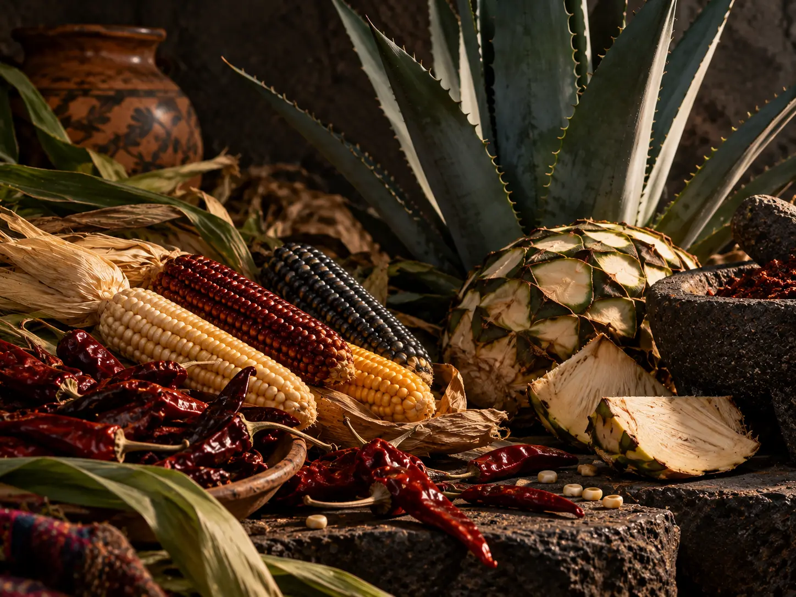

Maiz, Chile y Agave: una herencia viva
Estos tres elementos forman la base de una cocina que es tambien territorio, conocimiento y comunidad. El sistema culinario tradicional mexicano, reconocido por la UNESCO como Patrimonio Cultural Inmaterial, conserva practicas agricolas, tecnicas y rituales transmitidos entre generaciones.
Desde la milpa hasta la mesa, sus sabores cuentan una historia de adaptacion, celebracion y profundo vinculo con la tierra.